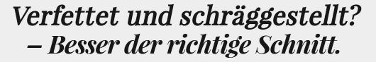

@charak
@charakVerfettet und schräggestellt
Endlich haben sich Webfonts durchgesetzt. Internetseiten können nun in ganz anderen Schriftarten erscheinen als nur in web-safe fonts wie Arial, Georgia oder Verdana. Einfach die Schriftdateien auf den Server laden und im CSS verlinken:
@font-face {
font-family: 'Beispielschrift';
font-style: normal; font-weight: 400;
src: url(Pfad/zur/Schrift-Regular.woff2) format('woff2'),
url(Pfad/zur/Schrift-Regular.woff) format('woff');
}
Damit versorgt man über 90% der Internetnutzer mit der „Beispielschrift“ und kann seinen Webauftritt individueller und stimmiger gestalten. Doch alle Klippen hat man damit noch nicht umschifft. Wichtig ist nämlich, genau den Schriftstil einzubetten, der später auch verwendet wird. Womit wir beim Thema dieses Blogeintrags sind.
Regular hilft nur im Normalfall
Viel zu oft binden Website-Betreiber nicht den richtigen Schriftschnitt ein. Das passiert sogar bekannten Anbietern wie Github (siehe “Trending repositories”), Alnatura (alle fetten Hervorhebung im Text) oder der Washington Post (bei den Zwischenüberschriften).
Meistens wird vergessen, dass der Browser Überschriften oder Hervorhebungen mit <strong> standardmäßig fett darstellt. Wenn man seine Beispielschrift nun wie oben verlinkt und einfach einer Überschrift zuweist, wird der Browser zu rechnen beginnen. Er verfettet die Schrift künstlich, da er ja nur die Datei für den Normalschnitt vorfindet.
Manchmal klappt die künstliche Verfettung relativ gut, abhängig vom Browser und der Schrift. Sie sieht aber immer schlechter aus als der richtige Fettschnitt. Fettgerechnete Buchstaben wirken oft klecksig, i-Punkte kleben am Stamm, kleine Öffnungen laufen zu und die Schrift wird schlechter lesbar. Ähnliches gilt für kursive Schriftschnitte.
Die Übereinstimmung ist entscheidend
Dabei lassen sich mathematische Schrägstellung und Verfettung recht leicht vermeiden. Man muss nur die Schriftstärke (font-weight) und die Schriftneigung (font-style) beim gewählten HTML-Element genauso angeben wie bei der Font-Datei, die dafür verwendet werden soll. Möchte man also die Überschrift fett und dazu kursiv haben, kommt ins CSS …
h1 { font: 1.5em/1.2 'Playfair Display';
font-weight: 700; font-style: italic; }
Die Schriftdatei bindet man dann ein mit …
@font-face { font-family: 'Playfair Display';
font-weight: 700; font-style: italic;
src: url(Pfad/zur/Playfair-BdIt.woff) format('woff');
}
Man beachte jeweils die zweite Zeile: Die Angaben bei dem HTML-Element und der Einbettung stimmen überein. Dadurch erscheint der Webfont dann genau so, wie ihn der Schriftgestalter sorgfältig hergestellt hat.

Übrigens: Es ist egal, ob man die Schriftstärke in Zahlen (300, 400, 700, …) oder in Worten angibt (light, normal, bold, …). Es muss noch nicht einmal der eigentlichen Fette der Schriftdatei entsprechen. Zum Beispiel kann man einen Regular-Schnitt verlinken, aber als bold deklarieren. So wird eine Fallback-Schrift fett angezeigt, falls beim Laden der Webschrift etwas schief geht. Das habe ich zum Beispiel hier im Blog mit meiner Titelschrift cz Slab gemacht, die mir als Regular-Variante schon fett genug erscheint.
---
Rubrik(en):
#methodik
#typografie